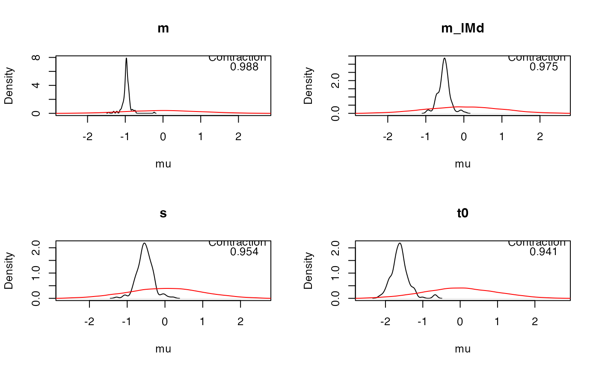
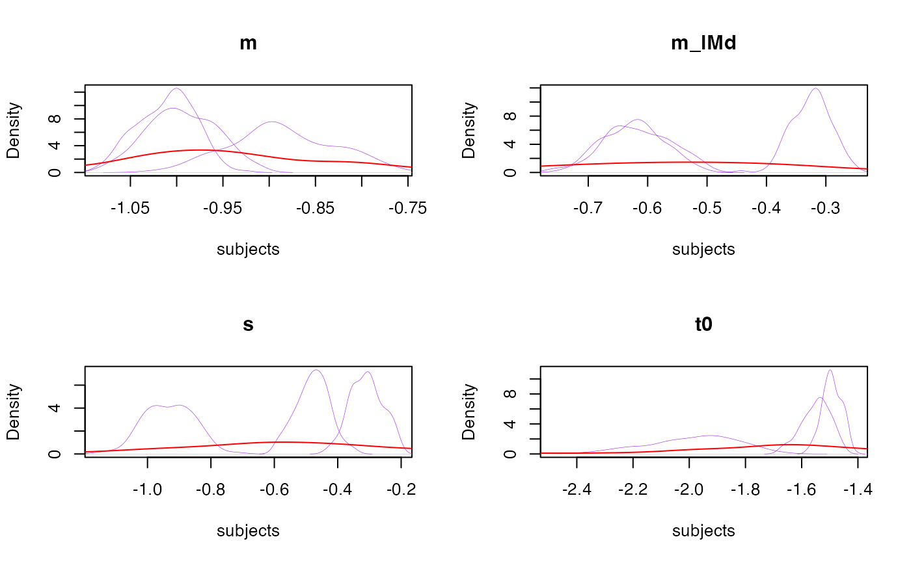
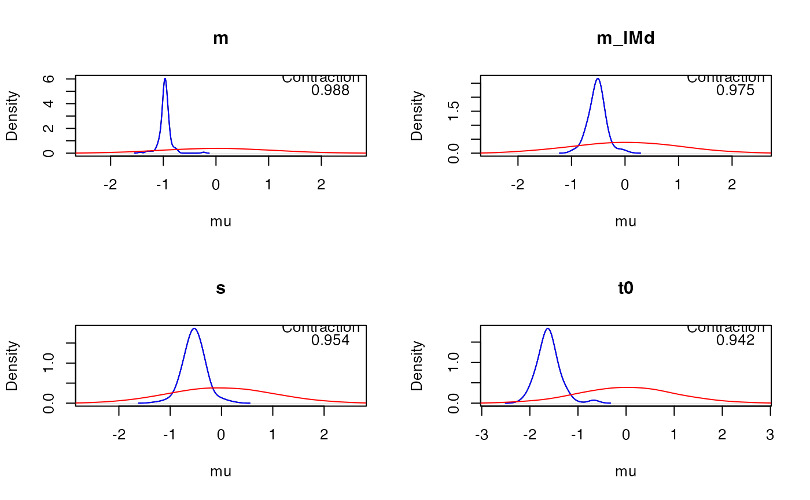

Plots the posterior and prior density for selected parameters of a model.
Full range of samples manipulations described in get_pars.
Arguments
- emc
An emc object
- layout
A vector indicating which layout to use as in par(mfrow = layout). If NA, will automatically generate an appropriate layout.
- selection
A Character string. Indicates which parameter type to use (e.g.,
alpha,mu,sigma2,correlation).- show_chains
Boolean (defaults to
FALSE) plots a separate density for each chain.- plot_prior
Boolean. If
TRUEwill overlay prior density in the plot (default in red)- N
Integer. How many prior samples to draw
- use_prior_lim
Boolean. If
TRUEwill use xlimits based on prior density, otherwise based on posterior density.- lpos
Character. Where to plot the contraction statistic.
- true_pars
A vector or emc object. Can be used to visualize recovery. If a vector will plot a vertical line for each parameter at the appropriate place. If an emc object will plot the densities of the object as well, assumed to be the data-generating posteriors.
- all_subjects
Boolean. Will plot the densities of all (selected) subjects overlaid with the group-level distribution
- prior_args
A list. Optional additional arguments to be passed to plot.default for the plotting of the prior density (see
par())- true_args
A list. Optional additional arguments to be passed to plot.default for the plotting of the true parameters (see
par())- ...
Optional arguments that can be passed to
get_pars,density, orplot.default(seepar())
Examples
# Full range of possibilities described in get_pars
plot_pars(samples_LNR)

# Or plot all subjects
plot_pars(samples_LNR, all_subjects = TRUE, col = 'purple')

# Or plot recovery
true_emc <- samples_LNR # This would normally be the data-generating samples
plot_pars(samples_LNR, true_pars = true_emc, true_args = list(col = 'blue'), adjust = 2)
